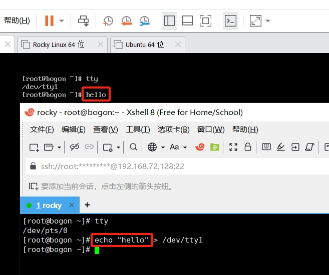
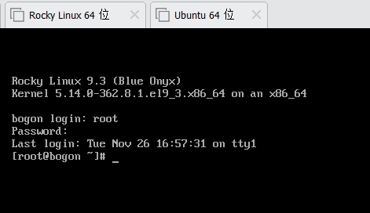
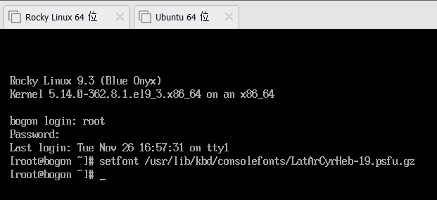
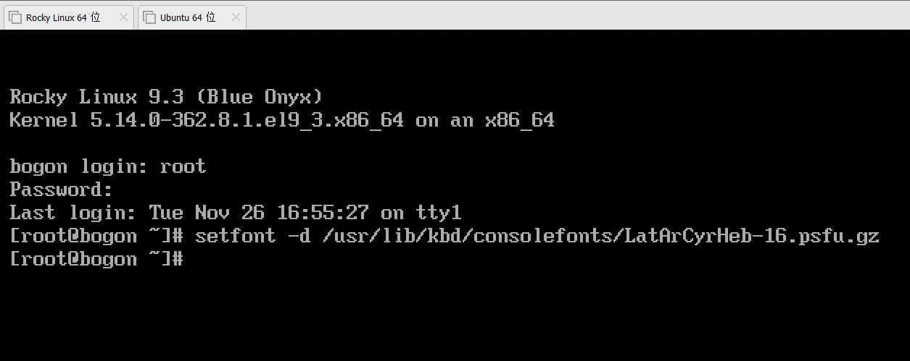
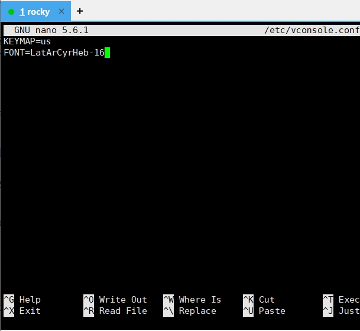
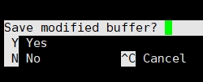
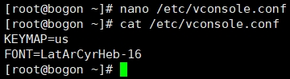

系统环境基础设置#
在系统安装完成后，系统已为大量设置了默认值。但出于使用需要，我们可能需要对某些设置进行更改，比如系统环境设置！
什么是系统环境？
比如植物在生长过程中，需要合适温暖的温度、光照条件、土壤养分、水分等等条件，它才能正常生长；比如做饭需要明火、锅具、调料、食材等等物料才能进行；比如……
而在计算机中，系统环境是各种程序运行所需要的基础条件，没有正确的系统环境，程序将无法运行或运行报错。
本章将探讨以下系统环境的设置：
时间日期
语言环境
键盘布局
系统语言
设置日期和时间#
在Linux中，为了使服务器之间的时间保持一致，使用了 NTP 来保持各服务器间的时间同步。
时间同步对于服务器之间的通信非常重要，举个例子比如你的手表显示11:38分时，你购买了一件商品，而商店的挂表显示11:36，那此时你到底是在什么时间购买的商品？时间不一致会导致各方产生歧义，因此保持时间同步非常重要。
所以服务器之间的时间同步也要如此，否则也会出现问题。而NTP的实现由是由运行在用户空间（与之相对的是 内核空间 ）的一个后台程序来保证的，它将会更新运行在 内核 中的系统时钟来使它保持与其它服务器的时间同步。
NTP后台程序会自动从网络上寻找NTP服务器来进行时间校准，在安装系统之初，系统便自动配置了从 NTP Pool Project 中寻找最近的服务器来进行这个工作。
总之，NTP是一个可以自动校准时间的功能，它对于服务器之间的通信有着十分重要的作用。那如果有特殊需求，想要手动设置时间怎么办？
手动设置时间日期#
要查看系统当前时间，可以直接运行 date 命令：
要设置系统时间，可以加上-s的参数，同时指定要设置的时间：
date -s "2020-10-28 14:49:32"
此时系统就设置成我们想要的时间了，不过我们只是改变的是系统时间，其实还有一个地方也在计时，它就是硬件时钟，也称 RTC ，系统在启动时，会读取硬件时间来做为系统时间，在启动后会定期使用NTP后台程序同步校准时间，可用 hwclock 来查看硬件时间：

因为，刚刚更改错误的时间，也可以使用这个命令来改回正确的时间：
hwclock -s
提示
date 命令和 hwclock 都可以通过 --help 的参数来获取相关参数说明。
实际生产中很少通过 date 这种方式来修改系统时间，多数通过NTP后台程序自动进行。不过 date 有一个很有用的功能，输出特定的时间格式，这在某些情况下很有用：
date "+%F %r"
date -d "next friday" "+%F"
date "+%Y-%m-%d %H:%M:%S"
date -d "yesterday"
通过timedatectl设置时间日期#
通过date修改时间后，没过多久，系统时间又变成正常的了，这是因为NTP后台程序在同步时间：
timedatectl status
NTP service是激活状态，此时手动修改时间后，NTP的后台程序还是会将改好的时间自动校准成正常的时间，因此需要把NTP服务关掉，再手动设置时间：
timedatectl set-ntp false
timedatectl set-time "2020-08-24 09:36:22"
timedatectl修改时间会把硬件时间也一同修改掉，在关掉NTP服务的情况下，系统时间就会一直是手动设置的时间来计时了。
执行 timedatectl set-ntp true 后，NTP服务会重新启用，会再次校准系统时间和硬件时间。
系统语言环境的修改#
我们安装好的Linux系统显示的是英文，运行VMware的windows系统显示的是中文，这就是系统语言环境决定的。如果没有配置好系统语言环境，中文会无法正常显示，因此系统语言环境也是一个非常重要的设置。
Linux系统的locale（系统语言环境的术语）设置在 /etc/locale.conf 中，并且每次在系统启动时，系统都会读取这里的配置，所有服务都会继承这里的配置。
比如我们想把系统改为中文显示，就需要更改这里的配置。有一个专用的修改配置命令，它就是localectl 。
localectl与timedatectl的使用方式很相似，比如要查询当前系统的语言环境状态：
localectl status
在更改系统语言环境之前，需要先查看一下系统上有哪些语言环境： localectl list-locales
看来我们的系统上并没有中文的locale，都是英文的locale，如果想要改成中文的系统语言环境，就先先安装中文的locale，可以执行以下命令进行安装：
dnf install -y glibc-langpack-zh
提示
dnf是红帽Redhat系Linux的在线软件包安装命令，可以方便的安装各个软件包并解决依赖问题。
dnf是红帽的下一代软件包管理命令，目前绝大多数系统还是使用的yum，上面的命令也可以用yum执行：yum install -y glibc-langpack-zh。
安装完中文本地化语言包后，再使用 localectl list-locales 命令就可以查看到中文的locale了。
此时，我们就可以把系统语言设置成中文了：
localectl set-locale zh_CN.UTF-8
提示
语言代码及说明如下：
zh_CN.UTF-8：简体中文
zh_HK.UTF-8：香港中文（繁体）
zh_SG.UTF-8：新加坡中文
zh_TW.UTF-8：台湾省中文（繁体）
此时系统显示语言并没有任何变化，因为 /etc/locale.conf 只在系统启动时才会读取并设置系统语言环境，因此我们在更改完后要让系统重新读取该配置文件，不过并不需要重启系统，可以使用以下命令让系统重新读取该配置文件：
source /etc/locale.conf
此时，我们再使用 date 查看系统时间时，显示语言是中文了。
不过Rocky Linux毕竟是服务器系统，对中文的支持有限，很多内容在系统语言是中文的情况下，仍然会显示为英文。当系统应用程序无法正常显示中文内容时，才需要安装这些语言环境包，通常情况下，系统还是以使用英文为主，所以还是将系统语言调回英文吧。
localectl set-locale en_US.UTF-8
source /etc/locale.conf
键盘布局修改#
此项设置极少进行修改， 键盘布局 通常使用QWERTY的类型，而且与语言代码和国家代码进行关联，如de表示德语，fr表示法语；uk表示英国，us表示美国。因此，键盘布局通常修改成与locale一样的语言或国家代码即可。
如当前的系统locale设置的是en_US.UTF-8，键盘布局也可修改成us：
localectl set-keymap us
localectl status
设置文本模式下的字体大小#
做为服务器系统，通常使用的是文本控制台模式（text console mode），但文本控制台的字体也可以更改大小。
提示
通过xshell登录的系统和通过VMware登录的系统，其终端类型是不一样的，可以使用tty命令查看当前的终端类型。
你甚至可以能过echo命令向另一个登录的终端发送消息，如上图所示。
echo命令的功能是将文本输出到屏幕上，“>”号则是将文本传递给指定的终端。
某些情况下，服务器没有联网，只能在控制终端登录（VMware中登录的就是控制终端），如果嫌这里的字体太小，则可以改大一些：
setfont /usr/lib/kbd/consolefonts/LatArCyrHeb-19.psfu.gz
提示
Linux中可以使用键盘中的tab键盘（大小写锁定键CapsLK的上方）来自动补齐命令和路径（路径指存放文件的位置，分为 绝对路径 和相对路径）。
如在命令行中输入“ec”后按tab键可补齐为“echo”命令。
如输入“setfont /us”后按tab键可补齐为“setfont /usr/”，然后继续输入下一级目录“setfont /usr/li”继续按tab键可补齐路径（此时lib的路径不唯一，连续按两次tab可出现备选路径），然后继续输入“setfont /usr/lib/kbd/con”……以此类推
自动补齐命令和路径的技巧可帮助我们节省输入命令时的时间和精力。
更改前字体大小
更改后大小
甚至可以加上“-d”参数，双倍放大字体大小
此项设置会随系统重启后失效，想要永久生效需要修改以下的配置文件：
cat /etc/vconsole.conf
仅配置字体名称即可，如上图的字段名为 /usr/lib/kbd/consolefonts/eurlatgr.psfu.gz ，实际仅配置名称 eurlatgr 。
这些字体由 kbd-misc (系统安装好后自带该软件包)提供，可通过 dnf install -y kbd-misc 安装，执行ls /usr/lib/kbd/consolefonts/ 可查看有哪些字体可供选择。
重要
编辑文件，可以使用nano，它是一个命令行的文本编辑器，使用起来比较简单，可以通过 dnf install -y nano 安装。
比如编辑vconsole.conf，可以执行 nano /etc/vconsole.conf：
然后使用键盘上的方向键移动光标，移动到FONT的配置项末尾，然后删除eurlatgr输入LatArCyrHeb-16：
此时按住键盘上的Ctrl键不放，按按下X键，nano会提示是否保存：
按Y同意保存刚刚的修改，然后继续按回车键保存修改，此时查看一下修好后的结果：
提示
ls意为list directory contents，可列出文件夹内的内容。
ls -l可列出列详细的内容，更多参数可通过 ls --help 来查询。
Linux里的诸多命令都可以通过命令名加 --help 来获取帮助，通过man可获取更详细的帮助，如 man ls ，按q键可退出man界面。
这些是学习Linux的重要方法之一。